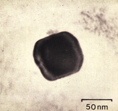

To find out what caused the colours of the Lycurgus Cup we needed to examine the glass at very high magnifications. However, as there is no transmission electron microscope at The British Museum we therefore worked with Professor David Barber, who was then at the University of Essex.
With the transmission electron microscope, the glass was seen to contain tiny crystals of metal, one of which is seen here. They are typically about 70 nanometres across (a nanometre is a millionth of a millimetre). X-ray analysis showed that the crystals consist of about seven parts silver to three parts gold. These crystals scatter the light, rather in the same way that fine particles in the atmosphere cause a 'red sky at night' effect. They cause the colour effects shown by the Cup.
Next page